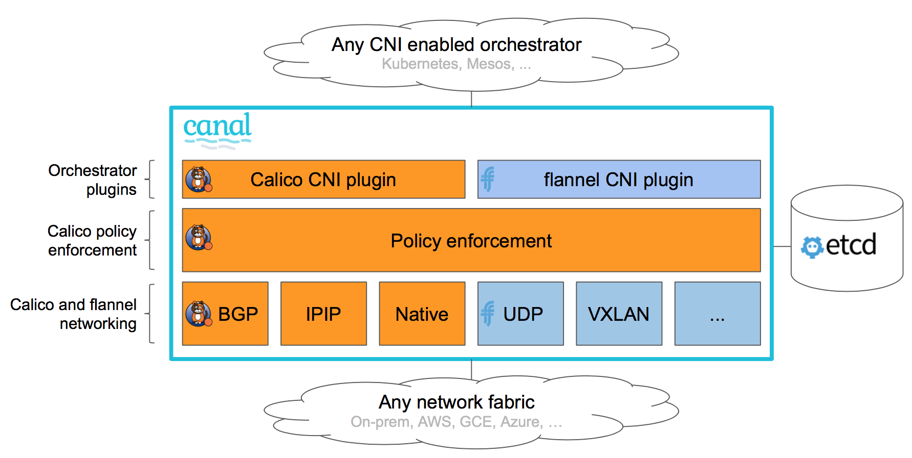

|
Il s'agit d'une documentation non publiée pour SUSE® Rancher Manager v2.15 (Unreleased). |
Fournisseurs d’interface réseau de conteneur (CNI)
Qu’est-ce que le CNI ?
Le CNI (Interface Réseau de Conteneurs), un projet de la Cloud Native Computing Foundation, consiste en une spécification et des bibliothèques pour écrire des plugins afin de configurer des interfaces réseau dans des conteneurs Linux, ainsi qu’un certain nombre de plugins. Le CNI ne s’occupe que de la connectivité réseau des conteneurs et de la suppression des ressources allouées lorsque le conteneur est supprimé.
Kubernetes utilise le CNI comme interface entre les fournisseurs de réseau et le réseau des pods Kubernetes.
Pour plus d’informations, visitez le projet CNI sur GitHub.
Quels modèles de réseau sont utilisés dans le CNI ?
Les fournisseurs de réseau CNI mettent en œuvre leur tissu réseau en utilisant soit un modèle de réseau encapsulé tel que le Virtual Extensible Lan (VXLAN), soit un modèle de réseau non encapsulé tel que le Border Gateway Protocol (BGP).
Qu’est-ce qu’un réseau encapsulé ?
Ce modèle de réseau fournit un réseau logique de couche 2 (L2) encapsulé sur la topologie de réseau de couche 3 (L3) existante qui s’étend sur les nœuds du cluster Kubernetes. Avec ce modèle, vous disposez d’un réseau L2 isolé pour les conteneurs sans avoir besoin de distribution de routage, le tout au coût d’une surcharge minimale en termes de traitement et d’augmentation de la taille des paquets IP, qui provient d’un en-tête IP généré par l’encapsulation de superposition. Les informations d’encapsulation sont distribuées par des ports UDP entre les nœuds de travail Kubernetes, échangeant des informations sur le plan de contrôle réseau concernant la manière dont les adresses MAC peuvent être atteintes. L’encapsulation courante utilisée dans ce type de modèle de réseau est le VXLAN, la sécurité du protocole Internet (IPSec) et l’IP dans l’IP.
En termes simples, ce modèle de réseau génère une sorte de pont réseau étendu entre les nœuds de travail Kubernetes, où les pods sont connectés.
Ce modèle de réseau est utilisé lorsqu’un pont L2 étendu est préféré. Ce modèle de réseau est sensible aux latences du réseau L3 des nœuds de travail Kubernetes. Si les centres de données sont situés dans des géolocalisations distinctes, assurez-vous d’avoir de faibles latences entre eux pour éviter une éventuelle segmentation du réseau.
Les fournisseurs de réseau CNI utilisant ce modèle de réseau incluent Flannel, Canal, Weave et Cilium. Par défaut, Calico n’utilise pas ce modèle, mais il peut être configuré pour le faire.

Qu’est-ce qu’un réseau non encapsulé ?
Ce modèle de réseau fournit un réseau L3 pour acheminer les paquets entre les conteneurs. Ce modèle ne génère pas de réseau L2 isolé, ni de surcharge. Ces avantages ont un coût, car les nœuds de travail Kubernetes doivent gérer toute distribution de routes nécessaire. Au lieu d’utiliser des en-têtes IP pour l’encapsulation, ce modèle de réseau utilise un protocole réseau entre les nœuds de travail Kubernetes pour distribuer les informations de routage afin d’atteindre les pods, tel que BGP.
En termes simples, ce modèle de réseau génère une sorte de routeur réseau étendu entre les nœuds de travail Kubernetes, qui fournit des informations sur la façon d’atteindre les pods.
Ce modèle de réseau est utilisé lorsque un réseau L3 routé est préféré. Ce mode met à jour dynamiquement les routes au niveau du système d’exploitation pour les nœuds de travail Kubernetes. Il est moins sensible à la latence.
Les fournisseurs de réseau CNI utilisant ce modèle de réseau incluent Calico et Cilium. Cilium peut être configuré avec ce modèle bien qu’il ne soit pas le mode par défaut.

Quels fournisseurs CNI sont fournis par Rancher ?
SUSE® Rancher Prime: RKE2 clusters Kubernetes
Prêt à l’emploi, Rancher fournit les fournisseurs de réseau CNI suivants pour les clusters Kubernetes RKE2 : Calico, Canal, Cilium et Flannel.
Vous pouvez choisir votre fournisseur de réseau CNI lorsque vous créez de nouveaux clusters Kubernetes à partir de Rancher.
Calico
Calico permet la mise en réseau et la politique de réseau dans les clusters Kubernetes dans le cloud. Par défaut, Calico utilise un tissu réseau IP pur et non encapsulé et un moteur de politique pour fournir la mise en réseau pour vos charges de travail Kubernetes. Les charges de travail peuvent communiquer à la fois sur l’infrastructure cloud et sur site en utilisant BGP.
Calico propose également un mode d’encapsulation IP-in-IP ou VXLAN sans état qui peut être utilisé, si nécessaire. Calico offre également une isolation des politiques, vous permettant de sécuriser et de gouverner vos charges de travail Kubernetes à l’aide de politiques d’entrée et de sortie avancées.
Les nœuds de travail Kubernetes doivent ouvrir le port TCP 179 s’ils utilisent BGP ou le port UDP 4789 s’ils utilisent l’encapsulation VXLAN. De plus, le port TCP 5473 est nécessaire lors de l’utilisation de Typha. Voir les exigences de port pour les clusters utilisateurs pour plus de détails.
|
Important :
Dans Rancher v2.6.3, les sondes Calico échouent sur les nœuds Windows lors de l’installation de RKE2. Notez que ce problème est résolu dans v2.6.4.
|

Pour plus d’informations, consultez les pages suivantes :
Canal
Canal est un fournisseur de réseau CNI qui vous offre le meilleur de Flannel et Calico. Il permet aux utilisateurs de déployer facilement Calico et Flannel ensemble en tant que solution de mise en réseau unifiée, combinant l’application des politiques réseau de Calico avec le riche ensemble de connectivité réseau de Calico (non encapsulé) et/ou de Flannel (encapsulé).
Dans Rancher, Canal est le fournisseur de réseau CNI par défaut combiné avec Flannel et l’encapsulation VXLAN.
Les nœuds de travail Kubernetes doivent ouvrir le port UDP 8472 (VXLAN) et le port TCP 9099 (vérifications de santé). Si vous utilisez Wireguard, vous devez ouvrir les ports UDP 51820 et 51821. Pour plus de détails, référez-vous à les exigences de port pour les clusters utilisateurs.

Pour plus d’informations, référez-vous à la source Canal maintenue par Rancher et à la Page GitHub de Canal.
Cilium
Cilium permet la mise en réseau et les politiques réseau (L3, L4 et L7) dans Kubernetes. Par défaut, Cilium utilise les technologies eBPF pour router les paquets à l’intérieur du nœud et VXLAN pour envoyer des paquets à d’autres nœuds. Des techniques non encapsulées peuvent également être configurées.
Cilium recommande des versions du noyau Linux supérieures à 5.2 pour pouvoir tirer pleinement parti du potentiel d’eBPF. Les nœuds de travail Kubernetes doivent ouvrir le port TCP 8472 pour VXLAN et le port TCP 4240 pour les vérifications de santé. De plus, ICMP 8/0 doit être activé pour les vérifications de santé. Pour plus d’informations, consultez les exigences système de Cilium.
Flannel
Flannel est un moyen simple et facile de configurer un tissu réseau L3 conçu pour Kubernetes. Flannel exécute un agent binaire unique nommé flanneld sur chaque hôte, qui est responsable de l’allocation d’un bail de sous-réseau à chaque hôte à partir d’un espace d’adresses plus large et préconfiguré. Flannel utilise soit l’API Kubernetes, soit etcd directement pour stocker la configuration réseau, les sous-réseaux alloués et toute donnée auxiliaire (telle que l’adresse IP publique de l’hôte). Les paquets sont transférés en utilisant l’un des plusieurs mécanismes de backend, l’encapsulation par défaut étant VXLAN.
Le trafic encapsulé n’est pas chiffré par défaut. Flannel propose deux solutions pour le chiffrement :
-
IPSec, qui utilise strongSwan pour établir des tunnels IPSec chiffrés entre les nœuds de travail Kubernetes. C’est un backend expérimental pour le chiffrement.
-
WireGuard, qui est une alternative plus performante à strongSwan.
Les nœuds de travail Kubernetes doivent ouvrir le port UDP 8472 (VXLAN). Voir les exigences de port pour les clusters utilisateurs pour plus de détails.

Pour plus d’informations, consultez la Page GitHub de Flannel.
Routage Ingress à travers les nœuds dans Cilium
Par défaut, Cilium n’autorise pas les pods à contacter des pods sur d’autres nœuds. Pour contourner cela, activez le contrôleur d’ingress pour acheminer les demandes entre les nœuds avec un CiliumNetworkPolicy.
Après avoir sélectionné le CNI Cilium et activé l’Isolation de Réseau de Projet pour votre nouveau cluster, configurez comme suit :
apiVersion: cilium.io/v2
kind: CiliumNetworkPolicy
metadata:
name: hn-nodes
namespace: default
spec:
endpointSelector: {}
ingress:
- fromEntities:
- remote-nodeFonctionnalités CNI par Fournisseur
Le tableau suivant résume les différentes fonctionnalités disponibles pour chaque fournisseur de réseau CNI proposé par Rancher.
| Provider | Modèle de Réseau | Distribution des Routes | Politiques Réseau | Maille | Datastore externe | Chiffrement | Politiques d’entrée/sortie |
|---|---|---|---|---|---|---|---|
Canal |
Encapsulé (VXLAN) |
Non |
Oui |
Non |
API K8s |
Oui |
Oui |
Flannel |
Encapsulé (VXLAN) |
Non |
Non |
Non |
API K8s |
Oui |
Non |
Calico |
Encapsulé (VXLAN,IPIP) OU Non encapsulé |
Oui |
Oui |
Oui |
Etcd et API K8s |
Oui |
Oui |
Weave |
Encapsulé |
Oui |
Oui |
Oui |
Non |
Oui |
Oui |
Cilium |
Encapsulé (VXLAN) |
Oui |
Oui |
Oui |
Etcd et API K8s |
Oui |
Oui |
-
Modèle de réseau : Encapsulé ou non encapsulé. Pour plus d’informations, voir Quels modèles de réseau sont utilisés dans CNI ?
-
Distribution des routes : Un protocole de passerelle externe conçu pour échanger des informations de routage et de connectivité sur Internet. BGP peut aider à la mise en réseau pod-à-pod entre les clusters. Cette fonctionnalité est indispensable sur les fournisseurs de réseau CNI non encapsulés, et elle est généralement réalisée par BGP. Si vous prévoyez de construire des clusters répartis sur des segments de réseau, la distribution des routes est une fonctionnalité appréciable.
-
Politiques réseau : Kubernetes offre des fonctionnalités pour appliquer des règles concernant les services qui peuvent communiquer entre eux à l’aide de politiques réseau. Cette fonctionnalité est stable depuis Kubernetes v1.7 et est prête à être utilisée avec certains plugins de mise en réseau.
-
Maillage : Cette fonctionnalité permet la communication réseau service-à-service entre des clusters Kubernetes distincts.
-
Datastore externe : Les fournisseurs de réseau CNI avec cette fonctionnalité ont besoin d’un datastore externe pour ses données.
-
Chiffrement : Cette fonctionnalité permet un contrôle et des plans de données réseau chiffrés et sécurisés.
-
Politiques d’entrée/sortie : Cette fonctionnalité vous permet de gérer le contrôle de routage pour les communications Kubernetes et non-Kubernetes.
Popularité de la communauté CNI
The following table summarizes different GitHub metrics to give you an idea of each project’s popularity and activity levels. This data was collected in December 2025.
| Provider | Project | Stars | Forks | Contributors |
|---|---|---|---|---|
Canal |
721 |
96 |
20 |
|
Flannel |
9.5k |
2.9k |
249 |
|
Calico |
7.3k |
1.6k |
416 |
|
Weave |
6.6k |
676 |
82 |
|
Cilium |
24.6k |
3.8k |
1108 |
Quel fournisseur CNI devrais-je utiliser ?
Cela dépend des besoins de votre projet. Il existe de nombreux fournisseurs différents, chacun ayant diverses fonctionnalités et options. Il n’existe pas de fournisseur qui réponde aux besoins de tout le monde.
Canal est le fournisseur de réseau CNI par défaut. Nous le recommandons pour la plupart des cas d’utilisation. Il fournit un réseau encapsulé pour les conteneurs avec Flannel, tout en ajoutant des politiques de réseau Calico qui peuvent offrir une isolation de projet/espace de noms en termes de réseau.
Comment puis-je configurer un fournisseur de réseau CNI ?
Veuillez consulter Options de Cluster pour savoir comment configurer un fournisseur de réseau pour votre cluster. Pour des options de configuration plus avancées, veuillez voir comment configurer votre cluster en utilisant un Fichier de Configuration.